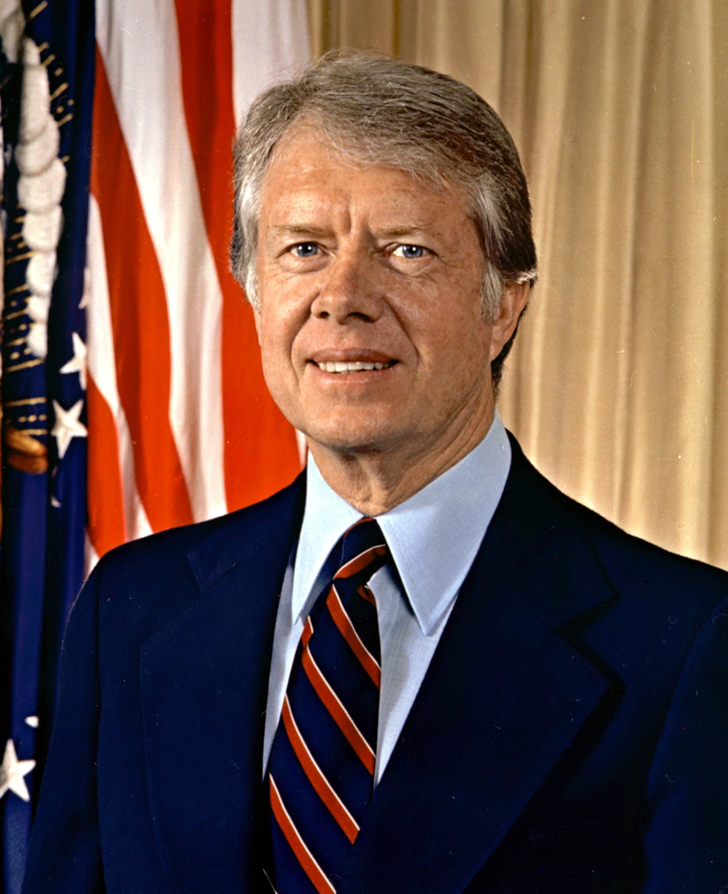

Home
News
The 1950s to the 2000s
Dwight D. Eisenhower

- Originally had his middle name be his first but later decided to switch them
- He only purchased a house after he became president due to his millitary career
- Loved golfing
John F. Kennedy

- Was the first Catholic President
- Received last rites three times before becoming president
- Doesn't have his brain in his body
Lyndon B. Johnson

- Both him and his wife have the same initials that being LBJ with his wife called Lady Bird Johnson
- He became president and ran for reelection on the same year
- He is one of four people to hold Distinguished Offices
Richard M. Nixon

- He is one of only two people to appear on a national presidential ticket five times
- Was the first president to vist a nation not recognized by the goverment
- Loved rap and wanted to be a rapper
Gerald R. Ford

- He played football at the University of Michigan
- Wasn't born as Gerald Ford
- Was a Boy Scout and earned the highest rank of Eagle Scout
Jimmy Carter

- Is the oldest person who was president
- Most people belive he did more after he became president then when he was president
- He could read up to 2000 words per minute
Ronald Reagan

- He was previously a famous actor before he became president
- Loved Jelly Beans
- Worked as a lifeguard for seven years saving 77 lives
George H.W Bush

- Was first person to become president since Martin Van Buren who was the sitting vice president
- When he became a pilot in the Navy he was the youngest person to become one
- His son later became president
Bill Clinton

- Was the first Democratic president to be elected two terms since Franklin D. Roosevelt
- First president to have a email address
- When eating an apple he eat all of it core included